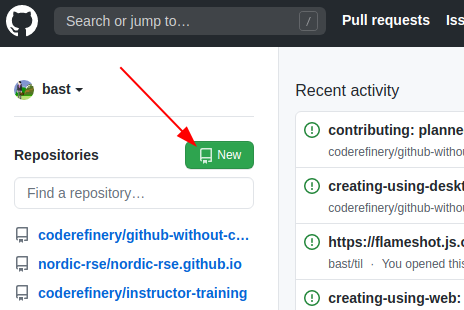
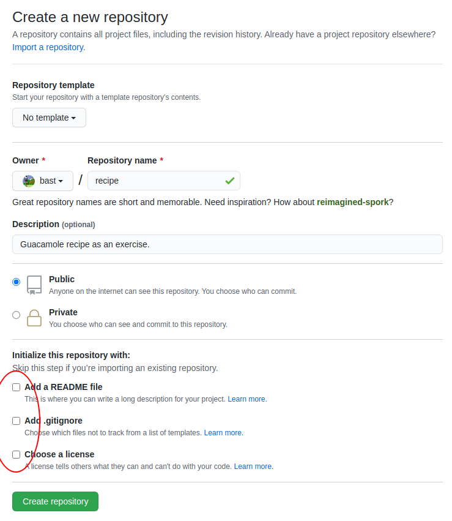
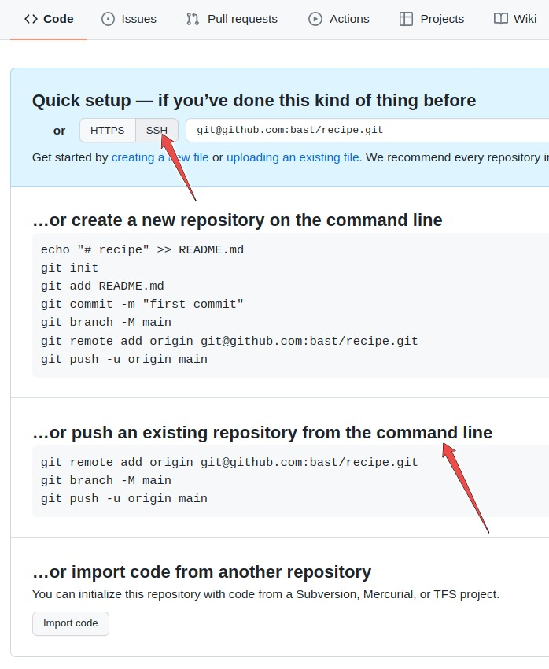

Version control and documentation
These exercises are adapted from the CodeRefinery lessons:
Exercise Git-and-documentation-1: Put your (example) project under version control
This is a good exercise if your project is not tracked by Git yet. If you don’t have your own coding project yet, you can first create few example files: for instance few cooking recipes and we will use Git to track their versions.
You will need to have Git installed and configured. Configuring can take few minutes but it is OK to use the time to configure Git to your liking (especially the editor and email).
Create a new directory and copy the project files into it.
Initialize a new Git repository:
$ git init
Initialized empty Git repository in /home/user/example/.git
Now try
git status. It will list all files as untracked (your files will be there instead of “another-file.txt” and “some-file.txt”):
$ git status
On branch main
No commits yet
Untracked files:
(use "git add <file>..." to include in what will be committed)
another-file.txt
some-file.txt
nothing added to commit but untracked files present (use "git add" to track)
Now
git addthe files to start tracking their changes (replace “another-file.txt” and “some-file.txt” with your actual files):
$ git add another-file.txt
$ git add some-file.txt
Now try
git statusagain:
$ git status
On branch main
No commits yet
Changes to be committed:
(use "git rm --cached <file>..." to unstage)
new file: another-file.txt
new file: some-file.txt
Now commit the changes (a commit records/”saves” the changes):
$ git commit -m "adding files to get started"
Now you got a commit. Inspect it with:
$ git log
Make some changes to these files or create new files,
git addthese changes, and commit them with:
$ git commit -m "informative message"
Then inspect the history again with
git log.
Now you have a Git repository! If you now modify any of the files that are tracked, you can always go back.
Exercise Git-and-documentation-2: Backup/publish your (example) project to GitHub/GitLab/YourServer
We assume that our project is now tracked by Git and that we have one or more commits. If no, go to Exercise 1 (above).
For this exercise you need a GitHub account. You can also try to do the same on GitLab. The process is analogous but the user interface is slightly different (screenshots here are only provided for GitHub).
Make sure that you are logged into GitHub.
{kind=link}

To create a repository we either click the green button “New” (top left corner).

Or if you see your profile page, there is a “+” menu (top right corner).
Yet another way to create a new repository is to visit https://github.com/new directly.
On this page choose a project name. For the sake of this exercise do not select “Initialize this repository with a README” (what will happen if you do?):
{kind=link}

Once you click the green “Create repository”, you will see a page similar to:
{kind=link}

What this means is that we have now an empty project with either an HTTPS or an SSH address: click on the HTTPS and SSH buttons to see what happens.
To push changes to the project please select SSH. For this to work you will need your SSH keys configured.
We now want to try the second option that GitHub suggests:
… or push an existing repository from the command line
Now go to your project repository on your computer.
Check that you are in the right place with
git status.Copy paste the three lines to the terminal and execute those, in my case (you need to replace the “user” and “project”):
$ git remote add origin git@github.com:user/project.git
$ git branch -M main
$ git push -u origin main
The meaning of the above lines:
Add a remote reference with the name “origin”
Rename current branch to “main”
Push branch “main” to “origin”
You should now see:
Enumerating objects: 3, done.
Counting objects: 100% (3/3), done.
Writing objects: 100% (3/3), 221 bytes | 221.00 KiB/s, done.
Total 3 (delta 0), reused 0 (delta 0), pack-reused 0
To github.com:user/project.git
* [new branch] main -> main
Branch 'main' set up to track remote branch 'main' from 'origin'.
Reload your GitHub project website and - taa-daa - your commits should now be online!
Exercise Git-and-documentation-3: Practice code review with somebody else
Students work in pairs of two.
One student creates an example repository on GitHub.
The student who created (and owns) the example repository adds the other student as “collaborator” (“Settings” -> “Collaborators and teams”).
The other student clones the repository from GitHub to their laptop.
Before doing any changes create a new branch with a descriptive name:
$ git branch descriptive-name $ git checkout descriptive-name $ git status
Now make a change to the example project and commit your change to the new branch:
$ git add somefile.txt $ git commit -v "descriptive message"
Push the branch (replace “descriptive-name”) to the GitHub repository:
$ git push origin descriptive-name
Now you can create a new pull request on GitHub from the new branch towards the default branch (main or master). Discuss and review the change together in words but also using the web interface: browse the change, use the discussion thread, try to suggest changes, and finally merge the change and then observe “Insights” -> “Network”.
Exercise Git-and-documentation-4: Improve the README of your project
In this exercise we will try to add a README to your project. If you have one already, we will try to improve it by following the checklist from the presentation slides:
Purpose
Installation instructions
Dependencies and their versions or version ranges
Copy-paste-able example to get started
Tutorials covering key functionality
Reference documentation (e.g. API) covering all functionality
How do you want to be asked questions (mailing list or forum or chat or issue tracker)
Possibly a FAQ section
Authors
Recommended citation
License
Contribution guide
See also:
If you are unsure where to start, start with one of the items in bold.